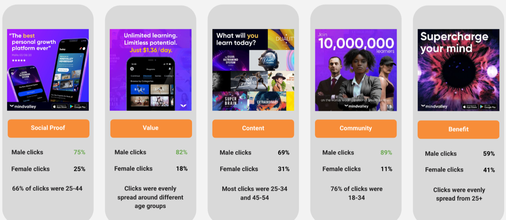

Toggle Solutions · UK Higher Education: Lead Acquisition. 7 August 2026 · Toggle side of the joint pitch deck. Print to PDF (1280×720 landscape, no margins) to share.
120,000 leads. 10,000 students enrolled.
Student acquisition for UK higher education.
We run the media, the funnel, and the creative for universities that are measured on enrollments. Our education work has delivered more than 120,000 qualified student leads and 10,000 enrollments, at a cost per lead 47% lower year on year.
[ Your Digital Growth Partner ]
Slide 2 · Who we are · Belief: "These people run education media for a living, not as a side vertical."
A performance team built around enrollment
Toggle Solutions is a digital growth partner based in Kuala Lumpur, buying media in eight markets across three continents. Education is our largest vertical by media spend. We buy media, build the lead capture, write the ads, and report on the only number that decides a semester: how many students enrolled.
120,000+
Qualified student leads
Delivered for UNITAR International University across the engagement to date.
47%
Cost per lead reduction, year on year
UNITAR, 2025. Achieved while spend was scaling, not while it was shrinking.
77%
Impression share, education category
UNITAR, 2025. Share of all education and training impressions in Malaysia.
10,000
Students enrolled
UNITAR, to date. The number the university is measured on, and the one we report against.
The work we own
Paid media on Meta, Google, TikTok and LinkedIn.
Lead capture: instant forms, quizzes, landing pages, chat.
Creative production in English and local languages.
Our operating rules
Senior operators only. The person in the pitch is the person on the account.
Weekly reporting against targets, broken out by campus or course.
We diagnose the funnel before we recommend a budget.
Where we are honest
We already buy in eight markets including the United Kingdom, so this is a new client for us rather than a new auction.
We have not yet run a UK university recruiting home students, so every UK number in this deck stays a projection until we see your account.
Slide 3 · The portfolio · Belief: "They are not a one-account agency, and the UK is not new to them."
Nine education brands, eight markets
Six universities, two international schools and one global edtech company. One team has run all of them, which is why a playbook proven on one account reaches the next one in weeks rather than quarters.
6
Universities
We run undergraduate, postgraduate and online recruitment on campus-level and course-level budgets.
UNITAR International University UNITAR College City University IOTA University College IJN University College
1
Global edtech company
We sell one product into eight very different auctions at the same time.
Mindvalley
2
International schools
We buy parent audiences on long consideration cycles for small, high-value intakes.
Named on request
Where we buy
Southeast Asia
Malaysia · Singapore
South Asia
Pakistan
English-speaking West
United Kingdom · Australia · Canada · United States
Europe
Continental Europe
The United Kingdom is already inside our buying footprint, so you would be hiring a team that has bought this market before.
Slide 4 · Education track record · Belief: "They have done this at scale, more than once."
Education is our deepest vertical
Four of the nine accounts in detail, spanning university, professional qualification and early years. The programs differ, but the job is the same every time: turn a fixed media budget into a predictable number of qualified applicants.
Client
Segment
What we ran
Headline result
UNITAR International University
Private university, 10 campuses plus fully online
Full funnel across Meta, Google and TikTok, per-campus budgets, creative production in English and Bahasa Melayu
120,000+ leads and 10,000 enrollments, cost per lead down 47% year on year
UNITAR College
Diploma and foundation, regional campuses
Campus-level lead generation in Bahasa Melayu, four creative angles per course
Spend up 126%, leads up 263%, cost per lead down 37%
EduKids Books
Children's educational publishing, e-commerce
TikTok and Meta acquisition plus landing page optimization
6x return on ad spend by month two, 5.5% conversion rate
Smart Reader Kids
Early years center, single location
Local search plus click-to-chat lead generation on a small budget
Proposal stage, roughly £540 monthly media test
Why this matters for a UK university
A UNITAR intake and a UK clearing cycle have the same shape. Demand spikes inside a short window, the offer is a high-consideration purchase, and the deciding metric arrives months after the click. Everything we built for that pattern moves across: per-course budget control, a messaging matrix that carries a prospect from curiosity to application, and reporting that ties spend back to enrollments rather than clicks.
The parts that do not transfer
Malaysian auction prices. UK cost per lead is higher, and we have priced this deck accordingly.
Local language creative. UK creative is English-first, with international student segments handled separately.
Compliance context. UK privacy consent and Advertising Standards Authority rules on course claims need a first-week review.
Slide 5 · Flagship case study, the numbers · Belief: "This is real, and it is large."
Case study: UNITAR International University Flagship
Southeast Asia's first virtual university, founded in 1997. The first institution in Asia to earn a QS 5-Star rating for online learning, with a 98% graduate employment rate and 13 regional centers. In mid-2024 their cost per lead was climbing on every platform and the campaigns had stopped scaling.
The problem in mid-2024
Google cost per lead had reached £28.
Facebook cost per lead had reached £53.
TikTok cost per lead had reached £95.
Spend kept rising and lead volume did not follow. The account needed rebuilding, not optimizing.
The result to date
More than 120,000 qualified leads across the engagement to date.
More than 10,000 of those leads enrolled as students.
Cost per lead 47% below the same period the year before.
77% of all education and training impressions in Malaysia.
Monthly media scaled past £2 million without cost per lead inflating.
120k+
Qualified leads
De-duplicated and validated, across the engagement to date.
-47%
Cost per lead, year on year
Measured against the equivalent 2024 intake window.
10,000
Students enrolled
Roughly 8% of every lead we delivered went on to enroll.
All UNITAR figures are actuals from the client's own reporting. Figures originally recorded in ringgit are stated here in pounds at the mid-market rate on 7 August 2026.
Slide 6 · How the UNITAR result was built · Belief: "There is a method here I can apply to my own institution."
How we did it: three levers, in order
None of this was a media buying trick. We fixed the message first, then gave each platform a defined job, then repaired the technical plumbing that was throwing away signal.
1
A messaging matrix
We mapped every ad to a stage of the student decision. Top of funnel challenged an assumption, for example "Is traditional education holding you back?". Middle of funnel reassured, for example "Learn, apply, get hired". Bottom of funnel pushed the application with a deadline. Prospects stopped seeing the same enrollment ad at every stage.
2
One job per platform
Google Search and Performance Max took students already looking for a degree. Meta carried the middle of the funnel with lead forms and storytelling creative. TikTok built awareness among school leavers who had not yet considered the institution. No platform was asked to do all three.
3
Technical hygiene
We installed the Conversions API for server-side signal, consolidated fragmented campaigns so the algorithm could learn, replaced broad targeting with layered intent and lookalike audiences, and put pacing controls on daily spend so budget did not burn early in the month.
The insight worth stealing
The 47% cost per lead reduction did not come from finding cheaper inventory. It came from removing the reasons the platforms were guessing: too many overlapping campaigns, no server-side signal, and creative that treated a curious 18 year old and a ready-to-apply adult as the same person. Fix those three things and the same budget buys more students.
Slide 7 · Belief: "They have run education outside Malaysia, at global scale, and cut a bad cost per lead by an order of magnitude."
Case study: Mindvalley Global edtech
A personal growth education platform selling courses and a subscription app into North America, Europe and Asia at the same time. We ran product launches, a subscription business and a mobile app on Google, Facebook, LinkedIn, TikTok and programmatic, and held channel ownership on three of them.
4x
Return on ad spend
We turned £370,000 of media into more than £1.5 million in revenue across product launches.
-90%
Cost per lead, B2B
We moved it from more than £74 to roughly £7 using lead generation forms on LinkedIn and Facebook.
+100%
Net revenue, subscription and app
We doubled it over the same period while cutting cost per install by 90%.
4
Creative agencies directed
We briefed international studios and scored their work on performance.
Three things the account forced us to solve
One product sold into several countries at once, so every market needed its own creative angle and its own price framing.
Two revenue models running side by side, a one-off course purchase and a recurring subscription, each with a different definition of a good acquisition cost.
Channel ownership across Facebook, LinkedIn and TikTok, including five first-round beta tests on the Facebook platform.
Why it belongs in a UK pitch
This is education sold in English to Western audiences, priced in a hard currency, which is much closer to your auction than a Malaysian campus campaign is.
The 90% cost per lead reduction came from the same two moves we propose here: qualify inside the form, and let structured creative testing pick the angle.
Fixing the product catalog and running dynamic prospecting ads is the same discipline a large course catalog needs.
Mindvalley Labs, September 2019 to March 2022. Creative produced by specialist studios under our direction. Figures originally recorded in dollars are stated in pounds at the mid-market rate on 8 August 2026.
Slide 8 · Supporting proof · Belief: "The method holds up outside one big account."
Two more proofs: volume discipline and cost discipline
A large university account can hide inefficiency behind scale. These two smaller accounts show the same method working where every pound is visible.
Lead generation
Kith & Kin Realty
A property agency generating leads through cold calling and inconsistent organic posting, with no repeatable digital system.
We built Meta lead generation campaigns targeting the gaps competitors were ignoring rather than fighting for the most expensive placements.
Creative was matched to message type: short video for the emotional pitch, static and animated formats for the offer.
+392%
Lead volume, three months
£6.30
Cost per lead, held steady
10%
Lead to closed deal
Education, e-commerce
EduKids Books
A children's educational publisher stuck below a 4x return on ad spend on TikTok against a 6x target, with a newly launched site making almost no sales.
We narrowed the audience to high purchase intent before increasing spend, then ran structured creative tests to find the angles that carried.
Meta ran alongside landing page work, because the page was losing as much revenue as the ads were winning.
6x
Return on ad spend by month two
£2.5k
Monthly site revenue
5.5%
Site conversion rate
In both accounts we changed the audience and the creative before we touched the budget, and the order is what moved them.
Slide 9 · How we priced a UK lead · Belief: "They showed their working instead of quoting a number."
What a UK student lead should cost [ PROJECTION ]
The number below comes from our own education accounts rather than from your auction. This is the working behind it, plus the conditions that would make it wrong.
Our benchmark
£36
Blended cost per qualified lead across our education accounts
›
What we are pricing
Name, email, phone, course
A contactable lead, not a click
›
Planning target
£36
The number every scenario in this deck is built on
›
Working band
£30 – £42
Where we expect to land once the account has learned
Why it could come in cheaper
English-only creative removes the translation and localization overhead we carry in Malaysia.
UK audiences have higher form completion rates on mobile, which lifts the conversion rate on the same click.
A single brand with strong search demand costs far less per lead than ten regional campuses competing for the same audience.
Why it could come in dearer
UK media auctions are more expensive per thousand impressions than Malaysian ones, particularly in the run-up to clearing.
Education keywords on Google Search in the UK are among the most competitive in any category.
If the lead definition tightens to include qualification checks, volume drops and cost per lead rises. That is a good trade, but it changes the number.
How we settle it
A four-week test at the smallest budget that still produces statistically usable data.
We report actual cost per lead weekly from week one and replace this projection with real numbers by the end of month one.
If the real cost per lead lands above £42, we say so and re-plan the budget instead of absorbing it in silence.
This projection assumes a lead is a person who submitted name, email, phone and course of interest. Change that definition and the number changes with it.
Slide 10 · Cost per lead by channel · Belief: "The blended number is made of real, separable parts."
The £36 broken down by channel [ PROJECTION ]
A blended cost per lead hides the trade you are making. Cheap leads and good leads sit at opposite ends of this table, and the right mix depends on how much your admissions team can handle.
Channel and format
Projected cost per lead
Share of budget
Lead quality
What this channel is for
Google Search, brand terms
£12 – £20
10%
Highest
Catching people already searching for you by name. Cheap, limited by demand, never scale beyond it.
Google Search, course terms
£45 – £65
25%
High
Buying active course research. Expensive per lead and worth it, because these prospects convert to applications at the highest rate.
Meta instant form
£24 – £32
30%
Medium
Volume at the top of the range. Fast to fill, and the leads need real nurture before they are worth a call.
Meta form with qualifiers
£34 – £46
25%
High
The same placements with three screening questions in the form. Fewer leads, much better calls.
TikTok, awareness to form
£20 – £28
10%
Lower
Reaching 17 to 21 year olds who have not shortlisted anyone yet. Cheap leads, longest time to application.
Blended planning target
£36
100%
Mixed by design
The mix weights half the budget to quality and half to volume.
The trade to decide together
If your admissions team can only call 100 prospects a week, buying 280 cheap leads a month wastes money. If they can call 400, the cheap channels become the best value on the table. Your calling capacity sets the mix.
The line we hold
We will not chase a headline cost per lead by loosening the form. Dropping the phone number field would cut cost per lead by roughly a third overnight and make the leads unreachable. Every cost per lead in this deck assumes a contactable lead.
Slide 11 · Budget scenarios · Belief: "I can see what my money buys before I commit it."
What each budget buys per month [ PROJECTION ]
All three scenarios use the same £36 blended cost per lead. All three run at the same efficiency. They differ in how many courses and audiences we can carry at once without starving any of them.
Test
£5,000
media per month
139 leads per month at £36.
Two courses, one country, two channels.
Enough data to prove or disprove the cost per lead in four weeks.
Not enough to run Google Search and Meta and TikTok at the same time.
Recommended
Build
£10,000
media per month
278 leads per month at £36.
Four to six courses, full channel mix, both domestic and international segments.
Enough volume per campaign for the platforms to exit the learning phase and stabilize.
This is the smallest budget at which the method in this deck works as designed.
Scale
£20,000
media per month
556 leads per month at £36.
Full course catalog, retargeting layer, and a separate international student campaign tree.
Creative refresh every two weeks, which is what stops cost per lead climbing at this level.
Requires an admissions team that can handle roughly 130 calls a week.
The client pays the platforms directly on their own card. Our management fee sits separately and is agreed with the partner before the pitch.
Slide 12 · Lead to enrollment · Belief: "They are talking about students, not leads."
From £10,000 of media to enrolled students [ PROJECTION ]
The cost per lead only matters if it survives the rest of the funnel. The chain below runs at the recommended budget, with every conversion rate written down so you can argue with it.
Media
£10,000
One month
›
Leads
278
At £36 each
›
Contacted
167
60% reached
›
Qualified
75
45% of contacted
›
Applications
30
40% of qualified
›
Enrolled
14
47% of applications
£714
Media cost per enrolled student
£10,000 divided by 14 enrollments. This is the number to compare against tuition, not the cost per lead.
8%
Acquisition cost against a £9,250 fee
Roughly 8% of one year of home undergraduate tuition, and under 4% against typical international fees.
5.0%
Lead to enrollment rate
14 enrollments from 278 leads. On UNITAR the same rate runs at roughly 8%, so 5% is a conservative place to start.
Read this honestly
The four conversion rates above are planning assumptions drawn from our education accounts, not UK measurements. Two of them belong to your team rather than ours: the contact rate depends on how fast admissions calls a new lead, and the application to enrollment rate depends on your offer and your competition. We will replace all four with your actual numbers in month one, and the whole model moves with them.
Slide 13 · Funnel options · Belief: "There is a real choice here and they have a view on it."
Three ways to capture a student lead
The capture mechanism decides your cost per lead, your lead quality, and how much work lands on the admissions team. We recommend running two of these together rather than picking one.
Route
Cost per lead
Volume
Quality
Build time
Best used for
A. Instant lead form
£24 – £32
Highest
Medium
Two days
Filling the top of the funnel fast, and open days
B. Conditional quiz flow
£34 – £46
Medium
Highest
Two to three weeks
Course matching, and protecting admissions time
C. Landing page to part-application
£55 – £80
Lowest
Very high
Three to four weeks
Late clearing, and postgraduate courses
A. Instant lead form
The form opens inside Facebook, Instagram or TikTok and pre-fills from the user's profile. Four fields, no page load, no drop-off from a slow site.
Strength: the cheapest reliable lead in the market and live within days.
Weakness: pre-fill makes it easy to submit without intent, so a share of leads will not remember filling it in.
Fix: three screening questions turn this into route B on the same placements.
Recommended
B. Conditional quiz flow
A short branching quiz that asks what the prospect wants from a career, then recommends the courses that fit and captures contact details on the result screen.
Strength: the prospect gets a useful answer, so they arrive at the call already engaged.
Strength: the answers become the routing logic, so admissions knows the course before they dial.
Weakness: costs more per lead, and the build takes three weeks.
C. Landing page to part-application
A dedicated course page that carries the full pitch, then starts the real application rather than collecting an inquiry.
Strength: the highest intent lead available, because the prospect has already begun applying.
Weakness: the most expensive per lead and the slowest to build.
Use when the intake window is closing and volume matters less than conversion.
Slide 14 · The recommended route in detail · Belief: "I can picture exactly what they will build."
The course-match quiz, step by step Recommended
This is the mechanism we would build first for a UK university. It solves the problem every admissions team has, which is that most inquiries arrive without enough information to have a useful conversation.
1
The hook
The ad asks a question the prospect is already asking themselves, for example "Not sure which course leads to the job you want?" It offers a two-minute answer rather than a brochure.
2
Five questions
Study mode, start date, current qualification, funding route, and the outcome they want. Each answer narrows the next question, so it feels like a conversation rather than a form.
3
The result
Two or three matched courses with entry requirements, fees and start dates. We capture contact details here, at the moment the prospect wants the detail sent to them.
4
The handover
The lead lands in your CRM with all five answers attached and a priority score. Admissions opens the record already knowing the course, the start date and the funding question to expect.
The answers keep working after the click
Prospects who selected a January start get a different call script and a different email sequence from those who selected September.
Anyone who answered that they are still studying goes into nurture rather than into the call queue, which stops admissions burning time on people who cannot enrol yet.
The five answers become audience signals we feed back into the ad platforms, so the targeting improves every week the quiz runs.
Build cost and timeline
Two to three weeks from brief to live, including the CRM connection and the tracking.
The quiz needs the real entry requirements and fee tables from your side. That is usually what sets the timeline, not the build.
We run route A instant forms alongside it from day one so that lead flow does not pause while the quiz is being built.
Slide 15 · Speed to lead · Belief: "The gap between my ads and my admissions team is where I am losing students."
The five minutes that decide the enrollment
Most institutions lose more students in the handover than in the auction. A lead that waits a day for a first contact behaves like a much colder lead, no matter what it cost to buy.
The usual handover
The lead arrives in a spreadsheet or an inbox and waits for someone to open it.
The first call comes on the next working day, or on Monday if the lead arrived on Friday evening.
By then the prospect has filled in three other forms and taken a call from a competitor.
The layer we install
An automated first reply within one minute, by WhatsApp or SMS, that confirms the course and offers two call slots.
Routing rules that send high-priority leads straight to a named counselor and everyone else into a nurture sequence.
A shared inbox so every conversation is visible and nothing sits unanswered over a weekend.
The difference it makes
The contact rate in the funnel model on slide 12 is the one assumption your team owns outright.
Moving contact rate from 60% to 75% adds roughly three enrolled students a month at the recommended budget, with no extra media spend.
It also improves the ad platforms, because faster qualification means faster feedback into the optimization.
The tooling question, answered plainly
We build this layer on a conversation platform such as Respond.io, which sits between the ad platforms and your CRM and handles WhatsApp, SMS, email and web chat in one place. Setup is a one-off project covering the routing logic, the message templates and the CRM connection, then an ongoing platform subscription. We scope and price that once we know which CRM you run and how many counselors need seats, since both drive the cost.
Slide 16 · Creative system · Belief: "They have a repeatable way of making ads, not a mood board."
Four angles per course, every time
Prospective students do not all want the same thing from a degree, so we never run one message per course. Every course gets the same four angles, and the platform tells us within two weeks which one that audience responds to.
The Pragmatist
Career focused
Speaks to employment. Names the job title, the starting salary and the employers who hire from the course. Wins with mature students and career changers.
The Futurist
Modern skills
Speaks to relevance. Positions the course as the current version of the field rather than the version their parents studied. Wins with school leavers.
The Dreamer
Empathy focused
Speaks to the fear underneath the decision, usually leaving home, cost, or being too old to start. Wins with part-time and online segments.
The Strategist
Affordability focused
Speaks to money. Leads with the fee, the funding route and the scholarship. Wins in the final weeks of an intake window when the decision is financial.
Why four and not one
Running four angles at once means the platform finds the winner instead of us guessing it, and it gives us three tested alternatives ready the moment the winner fatigues. On the UNITAR account this rotation is the main reason cost per lead kept falling while spend kept rising. A single creative angle decays once the audience has seen it enough times.
Production, month one
Four static concepts and two short videos per priority course, produced in-house.
Each concept sized for Meta feed, Meta stories, TikTok and Google display.
Refresh cycle every two weeks at the recommended budget, weekly at scale.
Slide 17 · Belief: "They do not argue about creative, they measure it."
How the winning angle gets picked
The same four-angle method, running on the Mindvalley account. Five concepts went live against one audience, and we read the results below to decide which one took the budget and who saw it next.

Five reasons to buy, tested at once
Social proof, value, content, community and benefit. Each one is a different reason to buy, so the test settles a business question rather than a design preference.
Split by who responded
The community angle pulled 89% male clicks and skewed 18 to 34, while the benefit angle split evenly from 25 up. That gave us two winners serving two audiences, each on its own budget.
The output is a brief
We turn each result into a named variable for the next round: change this headline, swap this imagery, use this device screenshot. The studio receives instructions rather than opinions.
Creative produced by a specialist studio under our direction. For a UK university the same read-out would split by course, start date and domestic versus international.
Slide 18 · Real work · Belief: "This is what my ads will look like."
Recent education creative: testing the angle
A postgraduate campaign for a university client, produced in-house. These three ran to the same audience in the same week, so the platform could tell us which promise that audience responds to before we put budget behind one.
Empathy angle, course family. Opens with recognition rather than the offer, and lists all four specializations so a single ad can serve the whole family of courses.
Price angle, course family. Same audience, same week, leading with the fee after the bursary instead. This is the test that tells us whether money or meaning moves the segment.
Price angle, single course. One course, one number, one action. The figure carries the ad, and the conditions sit beneath it rather than in a footnote.
We show this client work with the institution's branding intact. UK creative would be produced in your visual identity using the same system.
Slide 19 · Real work, course level · Belief: "One system can cover my whole catalog."
One layout system, one course each
The same campaign at course level. The layout, the logo placement and the call to action stay fixed, so the set reads as one campaign while each ad speaks to a different reason for enrolling.
Career angle. Built for prospects who already hold the job and want the qualification that promotes them. The headline names the outcome, not the course.
Modern skills angle. Positions the course as where the field is heading, aimed at the younger half of the same audience who fear being left behind.
Empathy angle. Different photography and a different promise on the same grid, which is what keeps a large catalog from looking like ten unrelated campaigns.
Production time for a set of this size is roughly one week once the fee tables, entry requirements and brand assets are in hand.
Slide 20 · First 90 days · Belief: "I know what happens in week one."
The first 90 days
Nothing here waits on a strategy document. We are live in the first two weeks and replacing the projections in this deck with real numbers by the end of month one.
Period
What we do
What you get
What we need from you
Weeks 1 – 2
Audit the existing accounts and tracking, agree the lead definition, build the first four creative angles for two priority courses, launch route A instant forms.
Campaigns live, tracking verified end to end, a shared weekly reporting sheet.
Ad account access, brand assets, entry requirements and fees for the priority courses.
Weeks 3 – 4
Read the first cost per lead data, cut what is not working, build the course-match quiz and connect it to the CRM.
Actual UK cost per lead by channel, replacing the projection in this deck.
A CRM contact, and a decision on the two call slots the automated reply should offer.
Month 2
Launch the quiz, add the retargeting layer, expand from two courses to the full priority set, start the international student segment if it applies.
A second capture route running, and lead quality reporting split by route.
Admissions feedback on which leads were worth calling. This is the input we cannot generate ourselves.
Month 3
Rebuild the budget model on real numbers, set the mix from your admissions capacity, plan the next intake window.
A media plan for the next intake built on measured performance rather than assumptions.
Enrollment outcomes for the first cohort of leads, so we can close the loop.
Day 90, done right
A verified cost per lead by channel, a capture route that arrives pre-qualified, a first contact time measured in minutes, and a budget model built on your own conversion rates rather than ours. By then you are planning on measured numbers instead of the ones in this deck.
Our stop condition
If cost per lead sits above £42 after four weeks of optimization and the lead quality does not justify it, we will tell you and re-plan instead of spending into it. We would sooner hand the budget back than report a number we do not believe.
Slide 21 · Close · Belief: "There is a clear next step and it is small."
What we need to make this real
Every projection in this deck is a placeholder for a number you already have. Four inputs turn it into a costed plan.
1
Your target
How many enrolled students you need this intake, and by which date. Everything in the media plan works backwards from that one number.
2
Your budget
The media budget available for the intake, and whether it is committed monthly or front-loaded into the peak weeks. Both change the plan.
3
Your history
Last intake's spend, leads and enrollments, even if the data is messy. Twelve months of imperfect history beats any benchmark we could quote.
4
Your capacity
How many prospects your admissions team can call in a week. This sets the channel mix, and it is the input most agencies never ask for.
The next step we propose
A 45 minute call with whoever owns the enrollment target, before any audit. We want to hear where the current funnel hurts most, because that decides whether the first thing we fix is the media, the capture, or the handover. We will bring the audit to the second meeting, once we know what to look for.
Engagement structure
Monthly management, no long lock-in. You keep ownership of the ad accounts and the data.
You pay the platforms on your own card.
We scope the quiz and conversation platform as one-off builds, priced apart from the monthly fee.